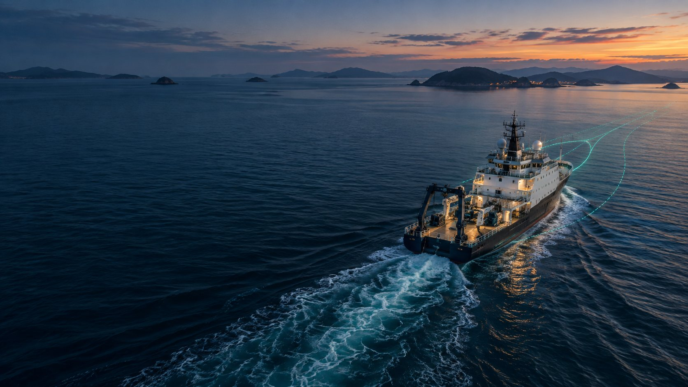
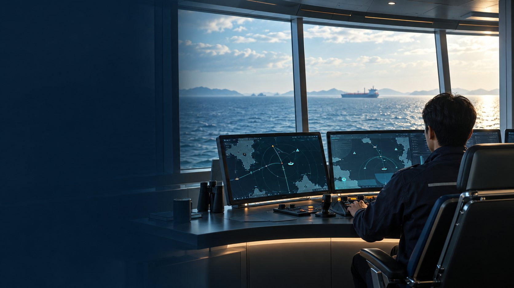
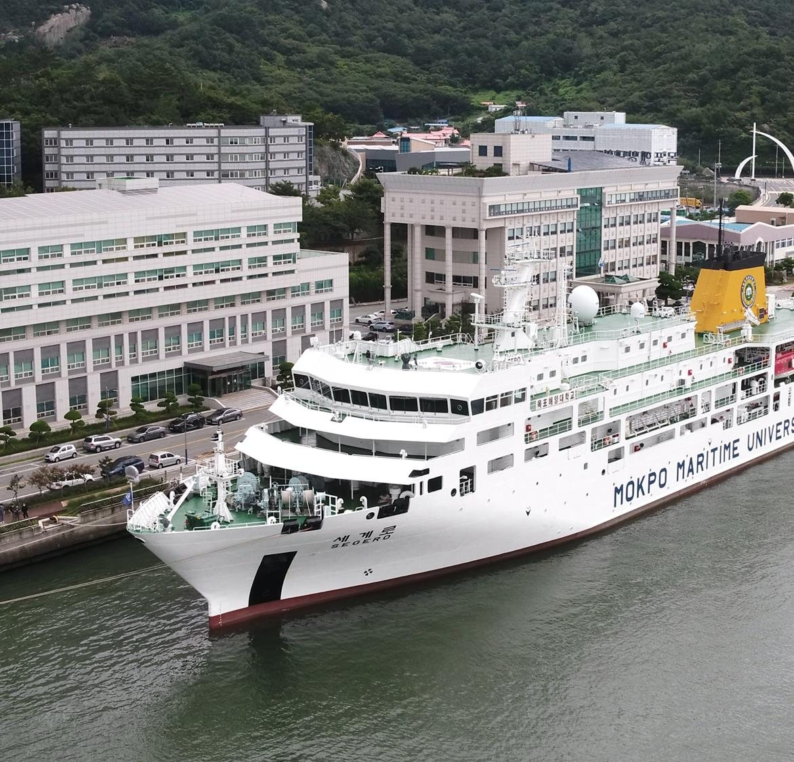
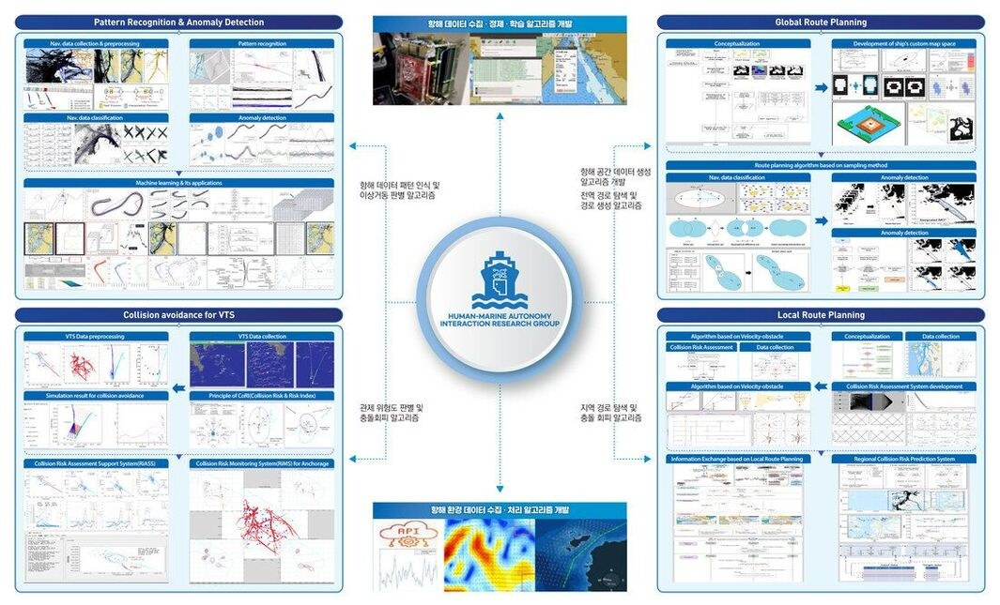

Human-Marine Autonomy Interaction Research Group
We study maritime big data and artificial intelligence to maximise the operational safety and efficiency of ships, including maritime autonomous surface ships (MASS).
Research Fields
Four directions, one goal: safer and more efficient ship operation.

Algorithms that learn from the navigator and the VTS operator
Our goal is a human-centred marine research environment: algorithms trained on the experiential knowledge of navigators and VTS operators, so that autonomy supports the people who keep ships safe rather than replacing them.
Latest News
We are looking for passionate M.S. students.
We welcome graduate students interested in autonomous ships, maritime traffic big data and collision-avoidance decision making. If you are interested in working with the Human-Marine AI research group, feel free to contact us.

About the Group
To build a human-centred human–machine marine research environment by developing algorithms that learn the experiential knowledge of navigators and VTS operators.
Korean
Human-Marine AI research group은 항해학 이론 연구와 더불어 자율운항선박을 포함한 선박의 운항 안전성과 효율성을 극대화시킬 수 있도록 해상 빅데이터 기반 인공지능 중심 연구를 수행하고 있다.
본 연구실에서 중점적으로 연구하고 있는 분야는 다음과 같다.
English
HUMAN-MARINE AUTONOMY INTERACTION RESEARCH GROUP (Human-Marine AI research group) is conducting research focusing on maritime big data-based artificial intelligence to maximize the operational safety and efficiency of ships, including autonomous ships.
The major research topics in the Human-Marine AI research group are as follows:
Research Field Overview
From navigation-data collection to route planning and collision avoidance for VTS.

Click to enlarge.
Affiliation
Members
Four advisors, an external advisor, post-doctoral researchers, doctoral and master's students, and alumni. Laboratory: Room #6315, No.2 Engineering Bldg.
Research & Projects
Research Themes
Concept visuals of representative studies. Click to enlarge.
Methods & Models
Schematic renderings of the models developed in the group (illustrative values).
Projects
| No | Project | Funding agency | Period |
|---|
Publications
29 international journal papers (SCIE 22 · SCOPUS 7), 23 domestic journal papers (KCI), 3 textbooks, 7 patents and 1 registered program.
Awards
22 awards since 2014, including best paper and best presentation awards at domestic and international conferences and journal outstanding reviewer awards.
News
Conferences, degrees conferred, appointments and publications, in reverse chronological order.
Contact
For admission enquiries, collaboration proposals or data requests, use the form below or contact the advisors directly.
Human-Marine AI Research Group
- Address
- 91 Haeyangdaehak-ro, Mokpo-si, Jeollanam-do 58628, Republic of Korea
Room #6315, No.2 Engineering Bldg., Mokpo National Maritime University - Tel
- +82-61-240-7193 (Prof. Joo-Sung Kim)
- Office
- Room #6413, No.2 Engineering Bldg.